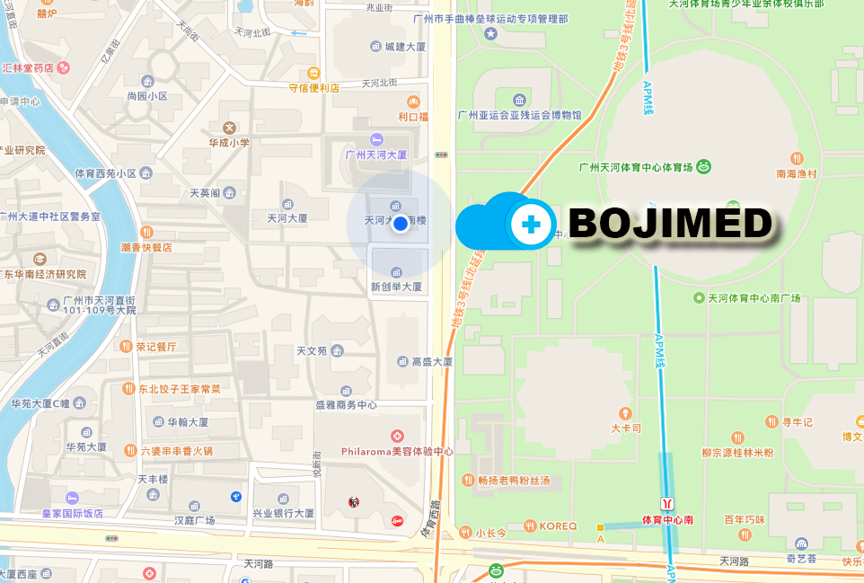

Bojimed® 智慧医疗
Clinical Medicine Cloud系统（即CMC）是一款多功能、模块化、易定制的智慧医疗平台，能够以简单便捷且相对低成本的方式实现帮助医院提升管理、完善医院服务、方便患者就医、加强医患交流、协助医院营销等功能，做到医院与患者双赢。在当前“互联网+”方兴未艾、医患关系有待改善的大背景下，更是具有巨大的社会意义。
/div>

医患沟通
方便的医患沟通功能，连接医生与患者，打破医患鸿沟，减少医患矛盾
病人自助服务
方便的医患沟通，患者轻松挂号，自助缴费，随时查询验单，为患者提供实实在在的便利。连接医生与患者，打破医患鸿沟，减少医患矛盾

医疗物联网
通过BojiMed®️多终端医疗物联网运营监控及大数据分析平台，实现全院资源监控、多维度数据采集、大数据分析输出；协助医院管理及科研进步
方案特点
ojiMed-CMC 智慧医院解决方案是针对医院量身定制的一套移动互联多平台解决方案。包括了医疗物联网大数据分析模块，移动医疗模块，病人诊疗模块，自助服务系统和智能硬件模块；通过与医院信息管理系统(HIS)连接，提高诊疗服务质量和效率，为医院、医生、患者提供方便。除此以外，我们还提供全套的医疗物联网大数据分析业务，助力医院科研及自身管理建设。
诊疗自助服务
患者可用手机或自助服务机完成疾病咨询、预约挂号，验单及账单的查询打印，费用支付等业务。还可实现住院病人手机订餐、室内定位导诊等功能
随诊随访
医生通过本平台建设的微信服务号、短信及app等渠道对离院患者进行用药指导、复诊提醒、保健提示，通过智能硬件对离院患者进行健康数据监测，提供健康辅导。
大数据分析
通过CMC与医疗器械、智能硬件、HIS、PACS和PEIS连接，实现医疗物联数据采集；通过大数据为医生和医院管理者提供快捷数据分析并协助医院管理及科研。
联系方式

中国 广州
天河区体育西路133号
天河大厦南楼
电话 +86 020-38686049
邮箱 wx@boji.it
10:00 - 19:00